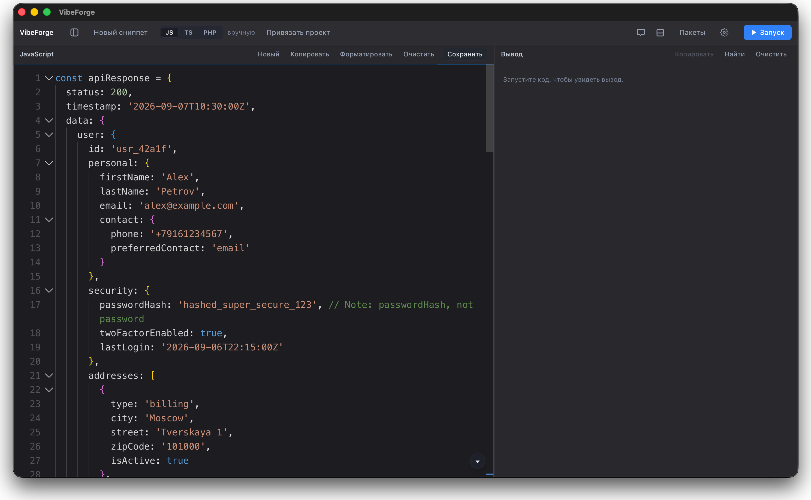

Бесплатная open-source альтернатива платным блокнотам вроде RunJS: JavaScript, TypeScript и PHP со встроенным AI-ассистентом. Всё выполняется у вас на машине — без браузера и без облака.
Apple Silicon · ~7 МБ · бесплатно




Редактор Monaco слева, вывод справа — одно окно вместо редактора и терминала.
Открытый исходный код
Границы продукта
Это не IDE — и не пытается ей быть
VibeForge — блокнот для кода, который пишут не чтобы выкатить, а чтобы получить ответ: сработает ли этот код, что вернёт этот API, как перебрать этот массив.
Что внутри
Настоящий редактор, запуск и AI —
в одном окне
Выберите пункт — покажу, как это выглядит в приложении. Код выполняется через ваши Node.js и PHP, сниппеты лежат в локальном SQLite.
Редактор Monaco
Тот же движок, что в VS Code: подсветка, свёртка и автодополнение — без остального веса редактора.
Внешний вид
Дизайн
Окно выглядит как часть macOS, а не как сайт в рамке. В стеклянных темах оно по-настоящему прозрачное — рабочий стол за ним размывает сама система.
Скачать
Свежая версия — на странице релизов
Первый запуск
Приложение не подписано сертификатом Apple, поэтому Gatekeeper заблокирует первый запуск. Выполните один раз:
xattr -cr /Applications/VibeForge.app
Удаление: Help → Uninstall VibeForge… — приложение само снесёт все свои данные.